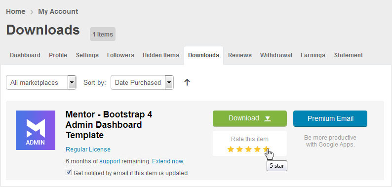

Mentor Introduction
Author: Potenza Global Solutions
This documentation will give you an understanding of how Webster template is structured and guide you in performing common functions.
Notes:
- We will not respond to any support questions on Item comment section or through e-mail. If this document doesn’t answer your questions feel free to open up a private ticket in our support forum
- For questions on basic HTML, Javascript or CSS editing – please give your question a quick Google or visit W3Schools as template issues get top priority.
- You will need some basic knowledge of HTML/CSS to edit the template.
- For customisation service contact us at our support forum
Basic template Structure
The template has a responsive layout and is based on the Bootstrap 4 Framework. Bootstrap is the most popular HTML, CSS, and JS framework for developing responsive, mobile first projects on the web. Click Here to know more about Bootstrap.
HTML Structure
Here is the general HTML structure of the template:
<!DOCTYPE html>
<html lang="en">
<head>
[Page meta, page css, page title etc...]
</head>
<body>
<div class="app">
<div class="app-wrap">
<!--=================================
preloader -->
<div class="loader">
[LOADER CONTENT]
</div>
<!--=================================
preloader -->
<!--=================================
header start-->
<nav class="admin-header...... ">
[HEADER CONTENT]
</nav>
<!--=================================
header End-->
<!--=================================
Main content -->
<div class="app-container">
<div class="app-navbar">
<!-- Left Sidebar start-->
<div class="sidebar-nav">
[SIDE MENU CONTENT]
</div>
<!-- Left Sidebar End-->
<!--=================================
wrapper Start-->
<div class="app-main">
[MAIN PAGE CONTENT]
</div>
<!--=================================
wrapper End-->
<!--=================================
footer Start-->
<footer class="footer">
[FOOTER CONTENT]
</footer>
<!--=================================
footer End-->
</div>
</div>
</div>
</div>
[PAGE JAVASCRIPTS HERE]
</body>
</html>
CSS Structure
Here is the general CSS structure of the template:
<!-- css --> <link rel="stylesheet" type="text/css" href="css/vendors.css" /> <link rel="stylesheet" type="text/css" href="css/style.css" />
This is a main stylesheets of the template, This file contains the styling for the actual Template. In this file, you can also find all vendors CSS imported on the top of the file. If you don’t need any of these plugins you can simply remove import plugin line from this file. Check below list of plugins which is already imported in style.css file.
- bootstrap.min.css: Bootstrap 4 css file. You must need this file. Do not remove this.
- metisMenu.css: metis menu for sidebar navigation
- fontawesome.css: font wesome icon css
- dashicons.css: dash icon css
- dripicons.css: drip icon css
- feather.css: feather icon css
- ionicons.css: ion icon css
- linea-weather.css: linea weather icons
- material-icons.css: material icons
- themify-icons.css: themify icons
- cryptocurrency-icons.css: cryptocurrency icon
- morris.css: morris chart
- jquery-ui.css: jQuery UI
- chartist.min.css: chartist chart
- c3.css: c3 chart
- dataTables.bootstrap4.min.css: datables bootstrap 4 css
- tableexport.min.css: table export
- fullcalendar.css: full calendar
- jquery.mCustomScrollbar.css: custom scrollbar
- summernote-bs4.css: summernote editor
- quill.snow.css: quill editor
- bootstrap-duallistbox.min.css: dual listbox
- bootstrap-datepicker.css: datepicker
- jquery.nestable.min.css: nestable
- owl.carousel.css: owl carousel
- owl.theme.default.min.css: owl carousel theme
- magnific-popup.css: magnific popup
- sweetalert2.min.css: sweet alert
- toastr.min.css: toastr
- select2.css: select 2
- bootstrap-tagsinput.css: tags input
- bootstrap-tagsinput-typehead.css: tagsinput typehead
- ion.rangeSlider.css: ion rangeslider
- ion.rangeSlider.skinFlat.css: ion rangeslider skin
Javascript Structure
Here is the general Javascript structure of the template:
<!-- vendors js --> <script src="js/vendors-min.js"></script> <!-- custom js --> <script src="js/app.js"></script>
Favicon Icon
Favicon is an icon associated with the URL that is displayed at various places, such as in a browser’s address bar or next to the site name in a bookmark list. There are many online favicon icon generators to generate .ico file. You can also use .png
You can add a Favicon to your Website using the following code:
<link rel="shortcut icon" href="images/favicon.ico" />
Page Loader
Page Loading Transition is enabled by default. If you wish to disable the page loading transition you can simply delete the below section from all HTML pages.
<div class="loader"> <img src="images/pre-loader/loader.svg" alt=""> </div>
Loader supported files: .SVG, .GIF, .PNG, .JPG
Logo Settings
The Logo can be found in nav tag. Replace "logo.png" with your own logo image. For responsive logo icon replace logo-icon.png with your own logo image.
<div class="navbar-header d-flex align-items-center"> <a class="navbar-brand brand-logo" href="index.html"><img src="images/logo.png" alt="logo" ></a> <img src="images/logo-icon.png" alt="logo"></a> </div>
Installation
Follow the steps below to get started with Mentor Admin Template:
- Open the
... /srcFolder to find all the Templates Files - You will need to follow the installation process to compile scss and js files.
- Below is the folder structure you will find inside template folder:
src/html– All HTML Filessrc/images– All Image Filessrc/fonts– All Font Filessrc/js– All Js Foldersrc/scss– All SASS Files
Getting Started
Mentor is build using different task to automate the development process. So for getting started you need to follow the below steps.
Node Js
Mentor is build on the base of node js. Node js is required to download all the dependencies via npm. So if you have not installed node first the download it from here Node Js.
If you have already installed node then please check it’s version using below command.
node -v.
If it’s not the latest version then we would recommend you to download the latest version from the above given link.
NPM
Node comes with its own package manager which is used using command npm. If you have already installed node.js then we will recommend to check it’s version and if it’s not the latest version then please update it using below command.
npm install -g npm
For Mac Users
Please use sudo command to install in your system.
sudo npm install -g npm
Gulp
Gulp is the task manager that is used to automate the task for easy development. Mentor is divided in different parts for which different gulp task is created.
If you have not installed gulp globally then please it using below command.
npm install gulp-cli -g
Now install all the dependencies required for the project go inside folder /src and run below command.
npm install
This will install all the dependencies from package manager.
Not to run the project use below commang this will process all the scss files and js files and will auto start the browser.
gulp serve
After you have finished all the changes use below commange to build your project which will minify your css and js.
gulp build
After completion you can see a folder name /dist on your root directory now you can upload the files inside the folder to your server.
Extra
Browser Support
Webster supports all major Browsers like Google Chrome, Mozilla Firefox, Safari, Opera, Microsoft Edge, Internet Explorer 11 and above.
How to rate this item
If you like our theme and support, Please do not forget to rate it with 5 stars in your Downloads section and write a review in Comments as it will add more value to our services!
Kindly visit here: http://themeforest.net/downloads and find “Rate this item” below the download button and rate out the theme.
Advance Thanks in Anticipation!

Change Log
Version 1.0 [13 Feb 19]
- Initial Release
Source & Credits
Images
- Pexels Pexels
JavaScripts
- browser-sync
- del
- gulp
- gulp-changed
- gulp-clean-css
- gulp-concat
- gulp-expect-file
- gulp-html-beautify
- gulp-imagemin
- gulp-jsvalidate
- gulp-load-plugins
- gulp-minify
- gulp-plumber
- gulp-pretty-html
- gulp-rename
- gulp-sass
- gulp-sourcemaps
- gulp-sync
- gulp-uglify
- gulp-util
- marked
- through2
- yargs
- cryptocurrency-icons
- dashicons
- dripicons
- feather
- font-awesome
- ionicons
- linea-weather
- material-icons
- themify-icons
- animate.css
- apexcharts
- autonumeric
- blobjs
- bootstrap
- bootstrap-datepicker
- bootstrap-daterangepicker
- bootstrap-filestyle
- bootstrap-maxlength
- bootstrap-select
- bootstrap-tagsinput
- bootstrap-touchspin
- bootstrap4-duallistbox
- bs-custom-file-input
- c3
- chart.js
- chartist
- d3.js
- datatables
- datatables.mark.js
- datatables.net
- datatables.net-bs4
- dropzone
- editable-table
- excel-table
- file-saverjs
- flot-charts
- fullcalendar
- gmaps
- inputmask
- ion-rangeslider
- jquery
- jquery-autocomplete
- jquery-datatables-checkboxes
- jquery-knob
- jquery-mapael
- jquery-sparkline
- jquery-ui-dist
- jquery-ui-touch-punch
- jquery-validation
- jqvmap
- js-xlsx
- jvectormap-next
- listfilter
- magnific-popup
- malihu-custom-scrollbar-plugin
- metismenu
- moment
- morris.js
- natives
- nestable2
- nested-datatables
- owl.carousel2
- quill
- listfilter
- raphael
- select2
- summernote
- sweetalert2
- switchery
- tableexport
- toastr
- waypoints